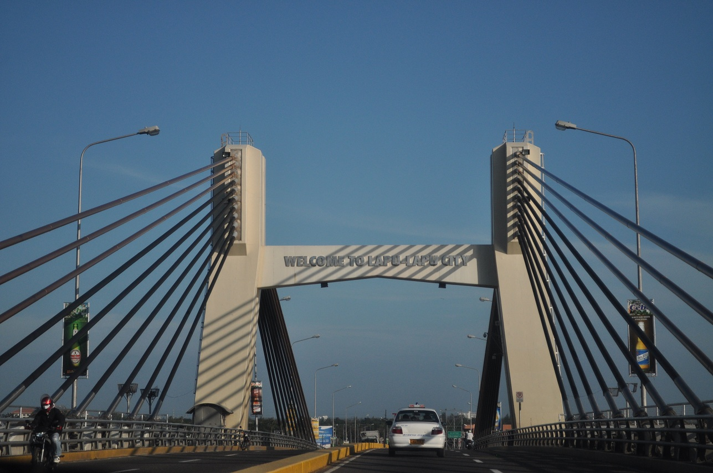

Lapu-Lapu City, located on the beautiful Mactan Island in the Philippines, is not only a destination of natural beauty and cultural significance but also a hub of exceptional services catering to the needs of residents and visitors alike. From hospitality to healthcare, Lapu-Lapu City offers a wide range of services designed to enhance the quality of life for its residents and ensure a memorable experience for travelers. Whether you're seeking accommodation, transportation, or medical assistance, you'll find everything you need right here on Mactan Island.
Experience Exceptional Services in Lapu-Lapu City

Hospitality is at the heart of Lapu-Lapu City's service industry, with a plethora of hotels, resorts, and guesthouses offering warm Filipino hospitality and world-class amenities. If you're looking for a luxurious beachfront retreat or a cozy budget-friendly stay, JPark is one of options that suit every preference and budget.
Transportation services in Lapu-Lapu City are convenient and accessible, with options ranging from taxis and tricycles to buses and ferries. Navigating the city and exploring its many attractions is a breeze, thanks to reliable transportation networks and friendly local drivers ready to assist you on your journey.
Healthcare services in Lapu-Lapu City are of the highest quality, with modern hospitals, clinics, and medical facilities equipped to meet the needs of residents and visitors alike. Whether you're in need of medical care, dental services, or wellness treatments, you can rest assured knowing that you're in capable hands in Lapu-Lapu City.
In addition to hospitality, transportation, and healthcare, Lapu-Lapu City also offers a variety of other essential services, including banking, shopping, and entertainment. Whatever you need during your stay in Lapu-Lapu City, you'll find friendly and reliable service providers ready to assist you every step of the way.

Come and experience the exceptional services of Lapu-Lapu City, where hospitality meets convenience, and every need is met with a smile. Whether you're a resident or a visitor, you'll feel right at home in this vibrant and welcoming city on Mactan Island.